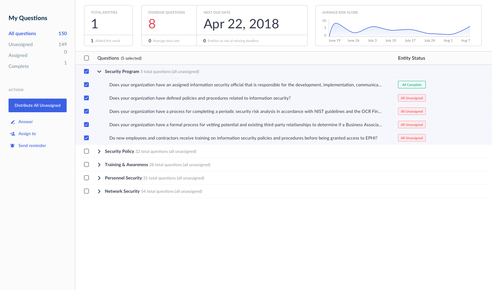
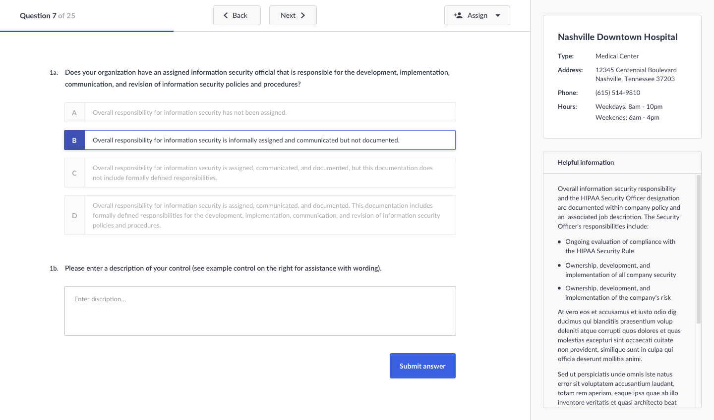
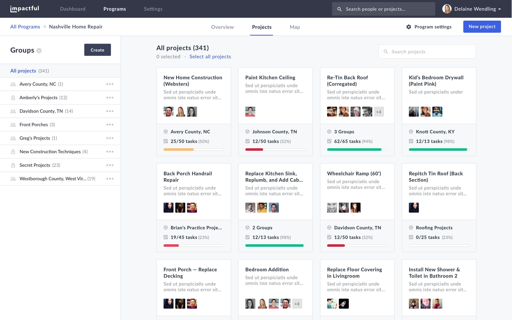
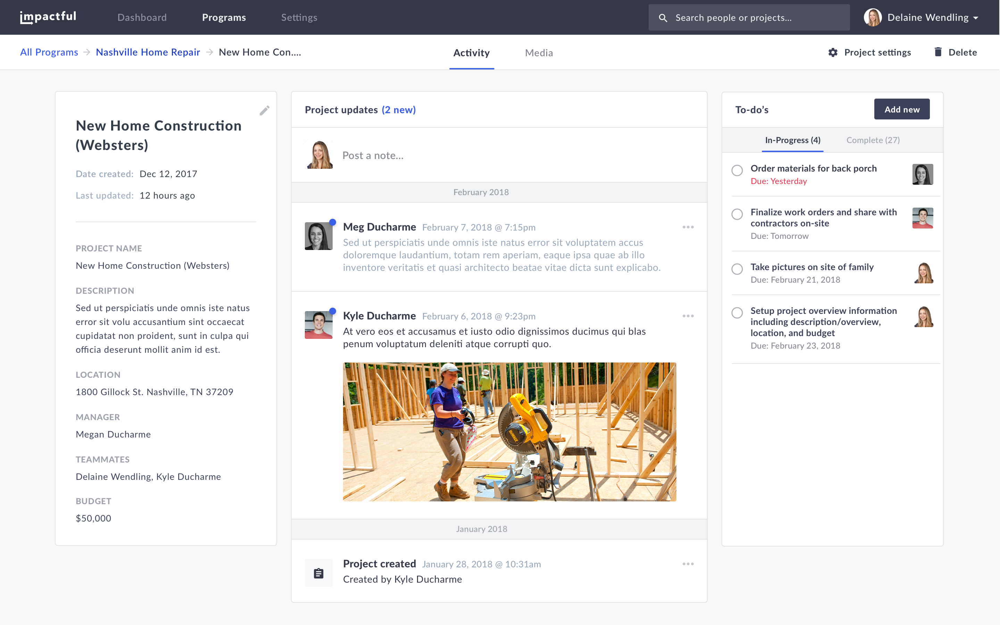
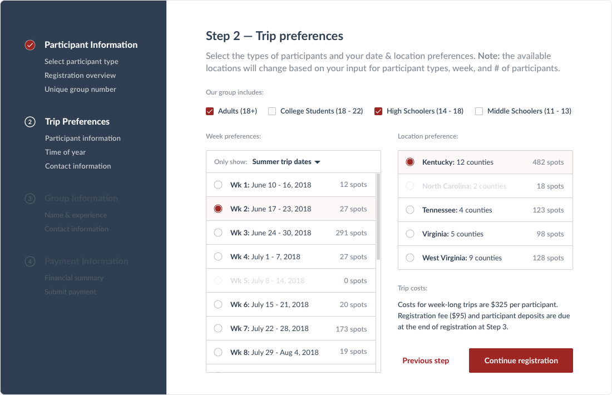
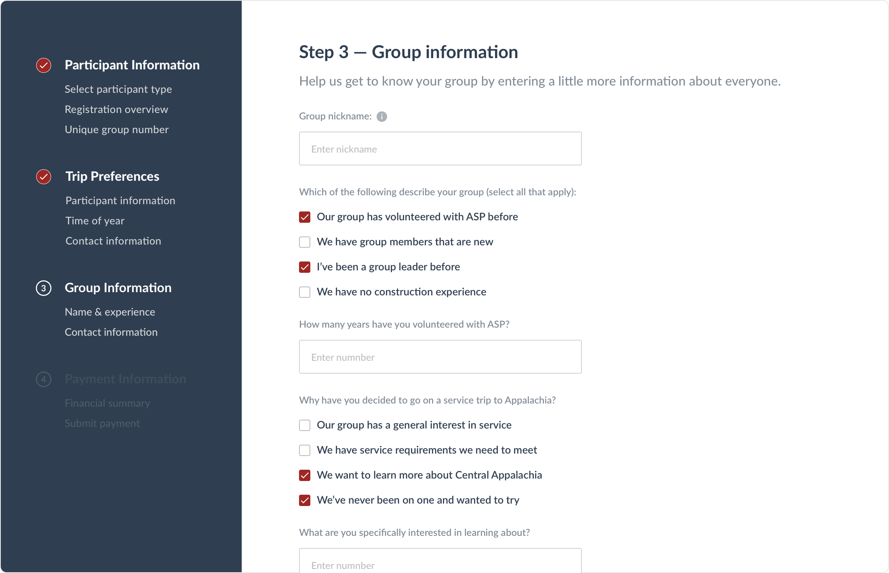

Case studies.
Edgenet — Lead Product Designer
Based in Nashville, TN, Edgenet is a growth-stage SaaS company that's product, utilized by more than 8,000 companies including Lowe's, Home Depot, GE, and Best Buy, makes the process of adding, managing, cleaning, and visualizing product data as simple and effective as possible. The product was originally built in 1990's with Silverlight, so the product's team task was to re-design and re-platform the product utilizing a more modern tech stack while ensuring that existing customers were supported during the migration.
Customer Type & User Persona
Edgenet's platform is utilized by more than 8,000 businesses including companies like Best Buy, Lowe's, GE, Honeywell, and more. The platform has two views (1. supplier 2. retailer), and I was responsible for leading the design efforst on the supplier view. For the 'supplier portal', there were two primary user types based on company size:
- Fortune 500 Companies: if a company was at the scale of Honeywell, GE, etc., the primary user of the platform was a young female, typically between the ages of 22-30 in a Marketing Analyst or E-Commerce role, and their sole responsibility was ensuring that the product data was uploaded, accurate, and sent to retailers. These types of users were typically less incentivized, lacked training, and were bored with their day-to-day responsibilities. This position was a stepping stone and a way to 'get their foot in the door' to move onto more exciting roles within the marketing department. The goals for this type of user were ensuring that the process was very simple (since they were not trained well) and included features that were relevant to marketing roles like e-tailer page previews, analytics, etc.
- Small-To-Medium Sized Companies: on the other side of the spectrum, if a company was a startup or in its growth-stage, the primary user of the platform was someone that was later in their career, typically between the ages of 35-50, that were wearing a lot of 'hats'. This responsibility fell on their plate because 1. they were the owner of the business and no one else could do it 2. no one else wanted to do it/someone recently was fired/quit, and it fell on their plate. Having the data uploaded, correct, and distributed to retailers was extremely important to this user because this symbolized growth by expanding operations into retail. The goals for this type of user were to make the process as effective & automated as possible due to their minimal time.
Responsibilities
As the Lead Product Designer, I was responsible for managing all aspects of the design experience and visual idendity for the re-design of the platform. My day-to-day focus ranged from conducting user interviews and usability tests to designing hi-fidelity mockups and prototypes to working with developers during the implementation phase.
Process
The following were steps involved in designing a feature during the re-design of the Edgenet platform. (note: these steps were not sequential)
- Interviews: conducted more than 100 interviews with internal and external stakeholders to understand the proble, state of product, and usability. Interviews focused on learning about the core pain point the platform solves, background and interests of users, how users accomplish goals within the product, what their workstation looks like, wishlists/frustrations, and much more.
- Information architecture: created high-level workflows for the architecture of the product based on interviews and card sorting exercises with stakeholders
- Wireframing & usability tests: developed initial wireframes and goal-oriented usability tests (using Balsamiq) that were conducted on site with existing users to validate architecture and feature assumptions
- Medium fidelty designs & usability tests: updated product flow and feedback and developed new flow of medium fidelity designs to use for usability tests. Focused on conducting in-person tests during this phase to dive deeper into understanding the user and building rapport
- Hi-fidelty designs & interactive tests: final iteration and created more interactive prototypes utilizing Proto.io, InVision, or Principle. Conducted usability tests with users utilizing Lookback.io
- Design handoff created interaction and component guide for developers and led kick-off meeting to build rapport and walk developers through product team's vision
Visuals
A sample visual for the product was the re-design of how suppliers organized, cleaned, and distributed product data to retailers. The feature was revamped to mirror the functionality of creating playlists in Spotify, which significantly simplified the process and ensured that users always knew where they were within the process from start-to-finish.
Before: clunky, slow, and outdated UI that was confusing for users and difficult to understand where they were in the process of sending data to a retailer.

After: new UI was built to be as simple as possible for users with minimal exposure to technology (most users were recent grads at large companies). Primary focus of view is the product data within the set.

WaveFire — Lead Product Designer
WaveFire is an early-stage startup that's building a cloud-based platform that simplifies the process of completing a HIPAA securtiy risk analysis in complex organizations. During a six month consultant role, I was responsible with working alongside the founders and technical team to design, test, and implement the user experience and visual design of the platform.
Customer Type & User Persona
WaveFire was built for businesses, specifically hospitals, medical centers, and SaaS companies, that manage sensitive information that needs to be protected. There are two primary users of the platform:
- Facility Managers: The person responsible for a particular location of a business (hospital, doctor's office, factory, etc.), and all of the employees that work at the facility. Facility managers are typically between the ages of 45-60 and are focused on the granular, day-to-day operations of the facility. These managers are responsible for gathering and submitting all of the information associated with completing and submitting the HIPAA risk assessment profile
- Corporate Office Managers: These users work at the company's HQ and oversee all facilities, so they're most interested in hi-level information and want to be pushed information if any facility's risk score hits a certain threshold
Product goals
The product helps ensure that businesses of all sizes are compliant with HIPAA regulations and do not have unnecessary risk. With most users being non-technical and unfamiliar with HIPAA regulations, the goals for designing the product were to create simple, intuitive, and modern interface that walks users through the process in a TurboTax-esque experience.
Process
Creating the WaveFire process followed significantly more iterative process that heavily focused on rapidly prototyping aspects of the product for testing and funding purposes.
- Founder discovery: 20+ hours of discovery and wireframing sessions with founders to understand the core problem, product's value proposition, and the proposed solution. The three founders have been working in the HIPAA space for more than 20 years each, so this stage of the process was invaluable to learn the ins and outs of the industry to help create an effective product design strategy
- Wireframing: created multiple rounds of wireframing and presented to founding team via clickable InVision prototypes. Enhancements made based on feedback from internal and external stakeholders
- Hi-fidelity designs & interactive prototyping: as part of the final delivery, multiple rounds of hifi designs were created to be used for usability testing. Also, full interactive prototype was built using InVision for usage in customer and investor presentations
- Design hand-off: project delivery included all aspects of the design including wireframes, mockups, prototypes, and Zeplin links
Visuals
Below are samples from WaveFire platform, which was designed to be as simple as possible for users that lacked technical experience.
 Outcome
At the end of the engagement, the product was delivered to the founders in a way that was ready to be developed and utilized to continue fundraising/sales efforts. All deadlines were met and expectations exceeded (sounds corny, I know) throughout the duration of the project.
Impactful — Lead Designer & Front-End Developer
Impactful is an open source project that I'm building with friends to help quantify the impact that nonprofits have by utilizing a bottom-up project management approach. During my years working with non-profits, I found it extremely difficult for organizations to understand the impact that their mission was having on their target audience due to fragmented software, broken processes, and a lack of training. To help overcome this, we're building Impactful, which is a one-stop-shop to manage programs & projects, as well as simplify how digital assets are distributed internally.
Customer Type & User Persona
The primary user of the Impactful platform is a program/project manager that's required to manage projects (either finite projects or ongoing programs) and ensure that resources are being allocated in the most responsible way. Typically, users are either recent college graduates (primarily female with minimal experience) or late in their career (ages 50+ that change adverse). Due to this, the product needs to be extremely simple to ensure that the product is onboarded into the organization's workflow and not rejected by users.
Product goals
Changing operational workflow in a nonprofit is extremely difficult, so the goal of this product is to mimic popular consumer applications (primarily Facebook) and 'hand hold' users throughout the program generation process in a TurboTax-esque way.
Process
As I've been involved with nonprofits since 2010 in a variety of part-time and full-time roles and have managed more than 100+ projects, the process was less traditional due to pulling from my past experiences (and pain points).
- User Interviews: as we're investing a lot of time building this open source tool, I wanted to invest time to validate that this problem existed in different nonprofit verticals. Working with internal and external stakeholders, I conducted more than 20 interviews to better understand problems, current solutions, and requirements
- Design & Prototyping: created multiple rounds of hifi mockups and presented to potential users to validate assumptions and test interactions
- Development: building the front-end of the product (React) alongside a friend developing the backend (Python). Goal is to finish MVP by summer 2018 for beta testing with five organizations
Visuals
Below are two samples from the Impactful platform. The visual design strategy was to build a simple, modern UI that was familiar to all users, regardless of age and tech experience, by incorporating design patterns from popular consumer apps.
 Outcome
At the end of the engagement, the product was delivered to the founders in a way that was ready to be developed and utilized to continue fundraising/sales efforts. All deadlines were met and expectations exceeded (sounds corny, I know) throughout the duration of the project.
splitsecnd — VP, User Experience
Founded in Nashville, splitsecnd was the first plug-and-play crash response, roadside assistance, and driving analytics IoT product and platform on the market. Over the course of my 2.5 years with splitsecnd, my role focused on develping the simplest experience for drivers of all ages ranging from teens to aging seniors.
Customer Type & User Persona
Initially, the product was developed by the founders for consumer use, specifically targeting Baby Boomers to purchase for aging parents or teen drivers. But, after years of being able to find product market fit, the company pivoted to focus on building a product that could be whitelabeled by business customers, including AAA, Uber, and more. Regardless, the end user of the platform remained the same (drivers between 16-21 and 65+), but the core offering was sold in bulk to large businesses in the US, Europe, and Middle East.
Primary focus
As the VP of User Experience, my responsibilities included overseeing the product design and brand team developing the end-to-end product experience ranging from packaging to web & mobile applications. In addition to this, I spent a significant amount of time working with the CEO and sales team leading product demos with potential customers and investors in the United States, Europe, and Middle East.
Detailed responsibilities
Throughout my time with splitsecnd, I was responsible for the following tasks:
- User experience design: overseeing the strategy and implementation of the end-to-end product, including both the IoT device and platform, experience including product design, customer support, and more/li>
- Wireframing: created multiple rounds of wireframing and presented to founding team. Enhancements made based on feedback from internal and external stakeholders
- Hi-fidelity designs & interactive prototyping: as part of the final delivery, multiple rounds of hifi designs were created to be used for usability testing. Also, full interactive prototype was built using InVision for usage in customer and investor presentations
- Design hand-off: project delivery included all aspects of the design including wireframes, mockups, prototypes, and Zeplin links
Appalachia Service Project — Interim Head of Experience
Based in rural east Tennessee, Appalachia Service Project (ASP) is a nonprofit that was founded in 1969 to repair and rebuild homes for low income families in Central Appalachia. After working with ASP for 4 summers during college, I returned in an interim role to help the organization leverage technology and design to deliver an exception mission trip experience for customers.
Customer Type & User Persona
The primary customer for ASP is a church group that's bringing between 5-200 volunteers to Central Appalachia for a week-long, immersive mission trip experience.
Responsibilities
As the Interim Head of Experience, my role was focused on all aspects of the volunteer experience from learning about ASP to registration to on-site work, as well as finding ways to leverage technology to help the internal team to be more effective in their roles.
Registration Flow
One of the key components to the experience is the way in which customers register for a mission trip. With groups ranging from 5 to 200 people, the process needed to be streamlined and simple to minimize drop-offs and cut down on the time from registration to completion. Also, as ASP mission trips are paid in installments, the process of collective funds from customers needed to be simple and intuitive.
 